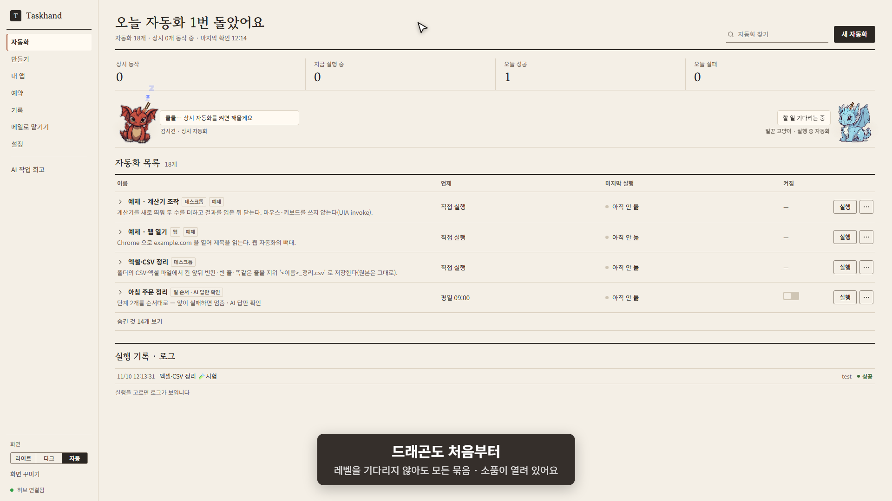
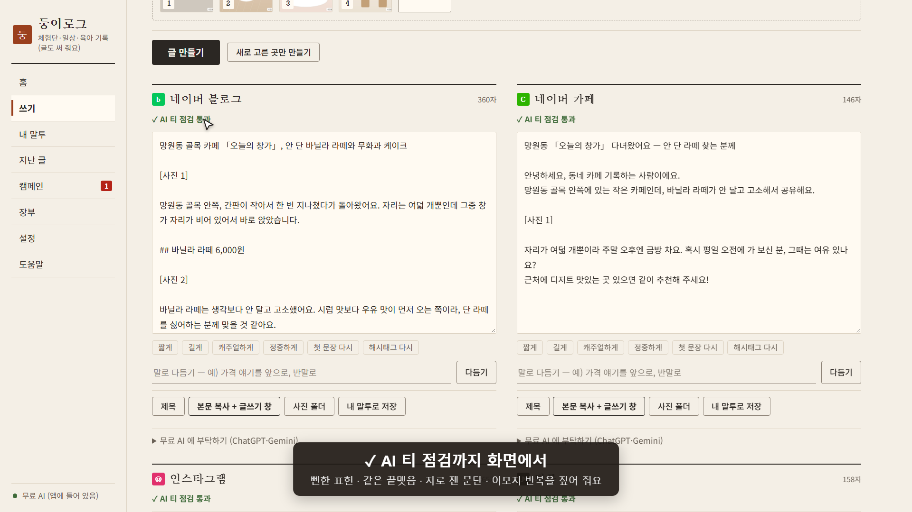

Windows 10/11 · 무료 · 내 PC 안에서만
계정 가입·광고·사용 통계 없이 내 PC 안에서만 돕니다. 무료 AI 가 앱에 들어 있어 AI 요금이 없고, AI 없이도 쓸 수 있어요.

반복 업무는 한 번 보여 주면 끝 — 따라 하기·예약·일 순서·사이트 감시·백업. 말로 부탁하면 무료 AI 가 자동화를 만들어요.
자세히 · 받기 →
사진 몇 장과 메모로 블로그·인스타 글 초안을 내 말투로. 체험단·협찬 정리와 장부, 원하면 육아 기록까지.
자세히 · 받기 →